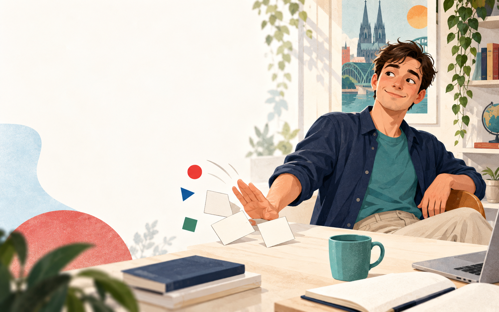
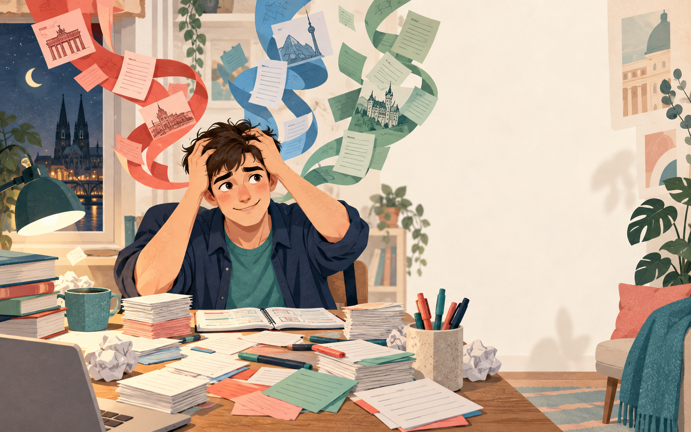
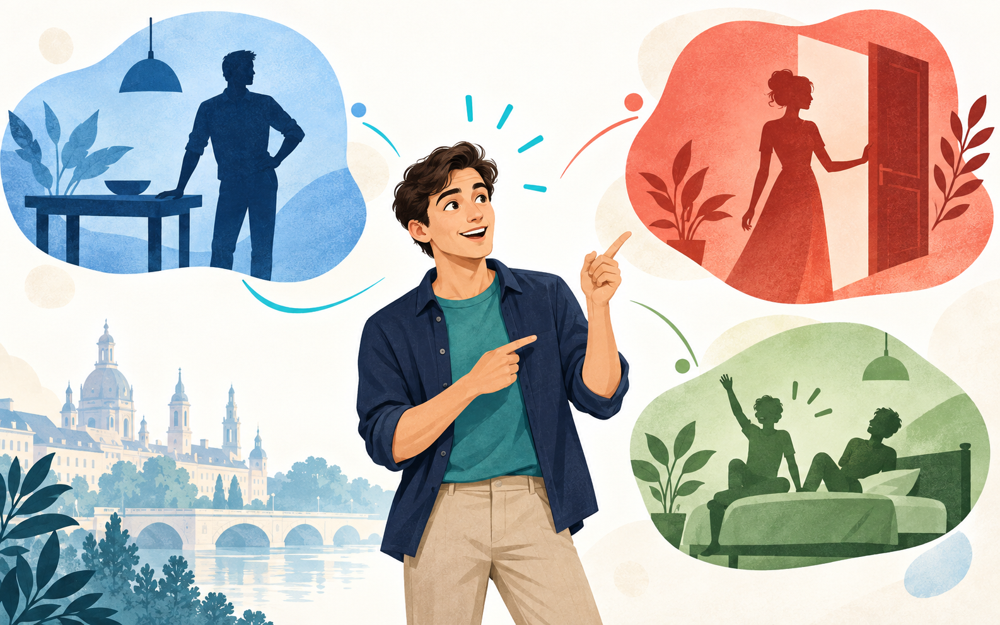
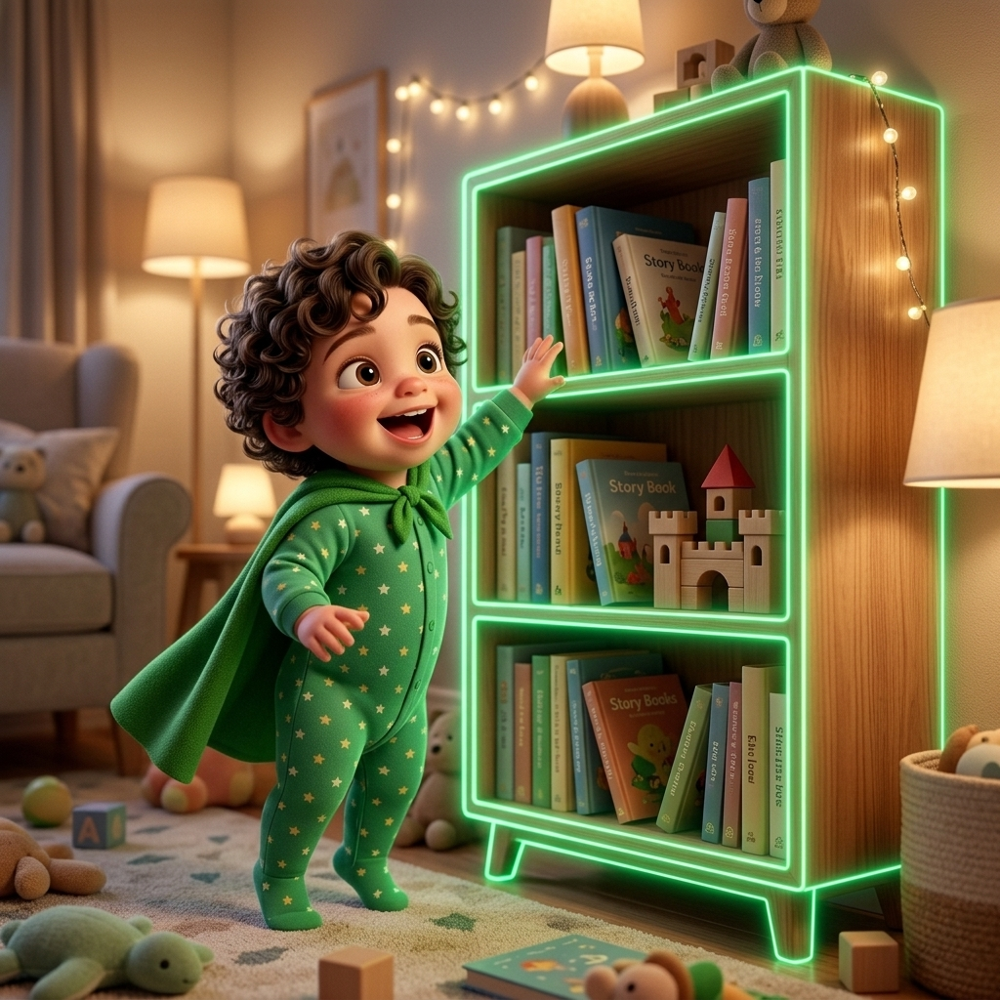
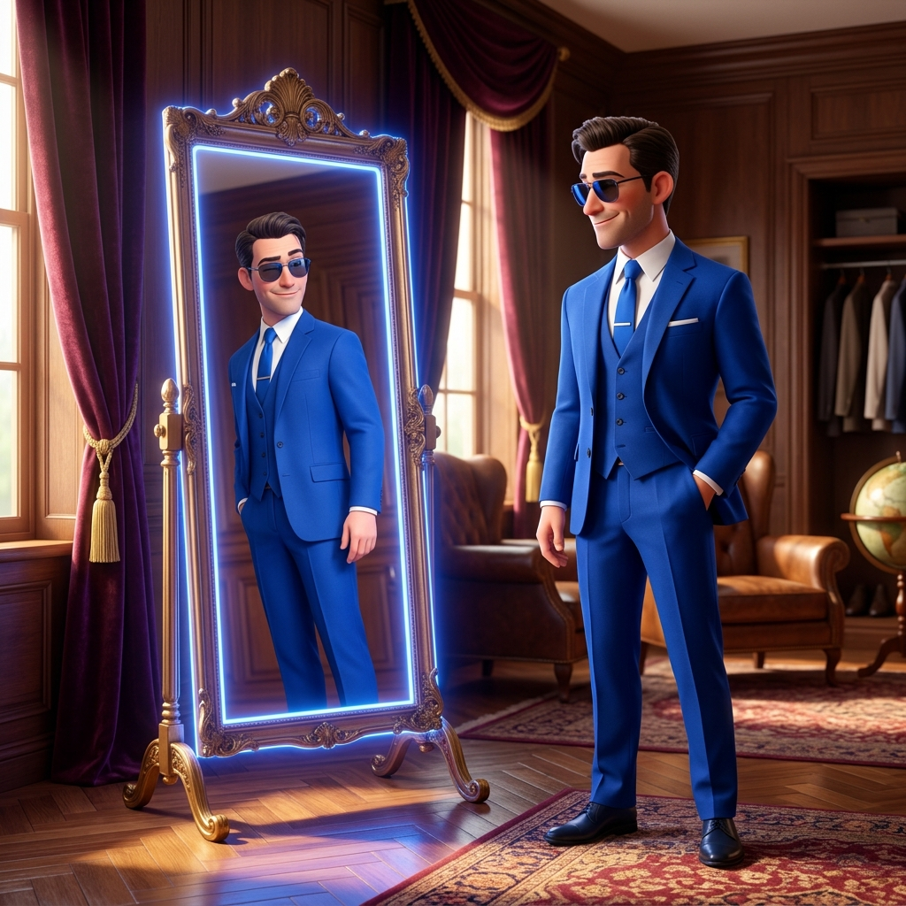

Когда речь идёт о конкретном или уже известном предмете.
Der Schrank steht im Schlafzimmer.
Практический гайд · A1–B1
Разберёмся, зачем нужны der, die, das, как они меняются по падежам и как связать род, образ и звучание слова в одну запоминающуюся сцену.
Начать с основ ↓
derdiedasНе очередную таблицу для сохранения «на потом», а понятную систему: от роли артикля в предложении до создания собственной мнемонической сцены.
Какие бывают артикли и почему существительное лучше сразу учить как цельную единицу.
Как род, падеж и тип артикля влияют на форму слова и окончание прилагательного.
Как соединить цвет, персонажа, созвучие и значение в образ, который легко восстановить.
Но сам я понял всё это далеко не сразу.
История · часть первая
Когда я начинал учить немецкий, рядом с каждым существительным болталось маленькое слово: der, die или das.
«Учи существительное сразу с артиклем», — говорил преподаватель. Но зачем, толком не объяснял.
Я запоминал Schrank — шкаф, Wand — стена, Regal — стеллаж. А артикль считал необязательным атрибутом: меня ведь и без него поймут.
Какое-то время система работала. А потом появились падежи и прилагательные.
Но как оказалось
Вот что я о них узнал.
Основа
Если вы знаете только Schrank, вы знаете перевод. Если знаете der Schrank, у вас есть основа для правильного предложения.
Когда речь идёт о конкретном или уже известном предмете.
Der Schrank steht im Schlafzimmer.
Когда предмет появляется впервые или является одним из многих.
Im Zimmer steht ein Schrank.
Когда мы отрицаем наличие предмета.
Hier steht kein Schrank.
Интерактивное упражнение
Выберите: определённый, неопределённый или kein. После ответа появится объяснение.
В комнате стоит кресло (впервые)
Одеяло на диване тёплое (конкретное)
Здесь нет шкафа
Род существительных
Род немецкого слова нельзя автоматически перенести из русского. Поэтому запоминаем не Schlüssel, а der Schlüssel.
der Schlüssel — ключ. Дни недели, месяцы и времена года обычно мужского рода.
die Wand — стена. Слова на -ung, -heit, -keit, -schaft обычно женского рода.
das Regal — стеллаж. Уменьшительные на -chen и -lein относятся к среднему роду.
das Mädchen означает «девочка», но грамматический род — средний из-за окончания -chen.
Падежи
Нажимайте на падежи и следите за одним словом: das Auto.
Was steht vor dem Haus? — Что стоит перед домом? Das Auto — подлежащее, поэтому используется Nominativ.
| м. | ж. | ср. | мн. | |
|---|---|---|---|---|
| N | der | die | das | die |
| A | den | die | das | die |
| D | dem | der | dem | den |
| G | des | der | des | der |
| м. | ж. | ср. | |
|---|---|---|---|
| N | ein | eine | ein |
| A | einen | eine | ein |
| D | einem | einer | einem |
| G | eines | einer | eines |
А затем появляется прилагательное
Определённый артикль уже показывает род, поэтому прилагательное получает окончание -e.

02История · часть вторая
Я уже понял, что артикли нужны. Но от этого они не начинали запоминаться автоматически. Три коротких слова были слишком абстрактными и постоянно путались.
На бумаге я узнавал правильный вариант. В разговоре знал нужное существительное — и зависал перед ним, потому что не хотел выглядеть глупо.
Проблема была не в количестве повторений. Нужен был другой способ кодирования.
Лучше всего запоминалось не то, что я повторял больше. А то, что превращалось в необычный образ.

03История · часть третья
Я пробовал правила рода, тематические списки, карточки и интервальные повторения. Первым настоящим шагом стали цвета. Затем я понял: цвету нужен постоянный герой. А самому немецкому слову — фонетическая опора.
Быстро отличает один род от другого и создаёт первую зрительную подсказку.
Превращает абстрактный род в узнаваемого героя, который может действовать.
Связывает звучание немецкого слова с уже знакомым русским образом.
синий мир
красный мир
зелёный мир
Знакомьтесь
Персонаж не заменяет артикль. Он вызывает его в памяти раньше, чем вы успеваете перебрать три варианта.
Мужчина в синей худи сидит за столом — значит, der Tisch.
Женщина в красном открывает дверь — значит, die Tür.
Дети в зелёном собирают кровать — значит, das Bett.
Лицо считывается быстрее абстрактного символа.
Один герой объединяет множество слов одного рода.
Герой взаимодействует с предметом и создаёт событие.
Странная или смешная сцена лучше удерживается в памяти.
Третий слой метода
Мужчина, женщина или малыш сообщают der, die или das.
Знакомое русское слово напоминает немецкое произношение.
Сам объект удерживает перевод существительного.
Необычное событие склеивает элементы в одну сцену.
Реальные примеры
Здесь используются настоящие слова и образы из тренинга.
Две женщины в красном стоят на лестнице и увлечённо треплются.

Малыш в зелёной королевской мантии расставляет регалии на стеллаже.

Мужчина-шпион в синем подмигивает своему отражению в зеркале.
Теперь вы
Попробуйте придумать сцену для:
крыша
Малыш → das, дача → Dach, крыша → значение.
Проверка без картинок
Вспомните персонажа и сцену, а не таблицу.
История · результат
Цвет разделял роды. Персонаж вызывал артикль. Фонетическая ассоциация возвращала звучание. А необычное действие удерживало всё вместе.
С помощью этой системы я смог запоминать не менее 300 новых немецких существительных в месяц — сразу вместе с артиклями.
Это мой личный результат, а не гарантия одинаковой скорости для каждого. Результат зависит от регулярности повторений и уже знакомой лексики.
Рассмотрите сцену и произнесите слово.
Восстановите артикль без подписи.
Назовите слово без изображения.
Используйте его в предложении.
Пройдите контрольное повторение.
История · часть пятая
Так появился готовый тренажёр, в котором слова, персонажи, фонетические ассоциации, изображения и повторения уже связаны между собой.
Тренажёр артиклей
Я открываю тренажёр по специальной цене до конца сентября.
01 · Целый год практикиТренируйте 300 слов и возвращайтесь к ним в удобном темпе.
02 · Выгода на новые словаКогда я добавлю новые слова, участники первого набора смогут получить их ещё выгоднее.
14,90 €
Один платёж
за год доступа
Первые 10 слов — бесплатно.
Без регистрации и карты.
Перед стартом
Да. Лучше всего сразу учить новые существительные вместе с родом. Если слова уже знакомы, метод поможет заново связать их с артиклями.
Нет. Она помогает быстро вспомнить род существительного. Падежи и окончания всё равно нужно понимать, но применять их становится значительно легче.
В тренинге основные сцены, персонажи и фонетические ассоциации уже подготовлены. Однако принцип из этого гайда можно использовать и для собственных слов.
Материал разделён на три короткие сессии: знакомство, восстановление и проверку. Такой формат проще регулярно повторять.